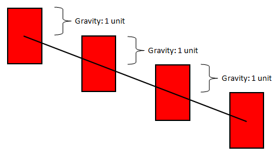
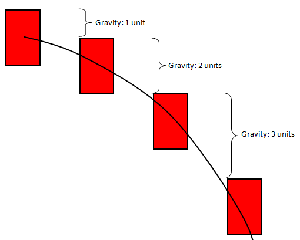

Platformer Game: Gravity
A platformer game is a type of game that relies on safely jumping onto platforms to win. One of the most famous examples of this genre is the Super Mario series. We are going to take a look at the game mechanics.
First you will need a Canvas to get started with. Copy the code below (it will not compile at first). For the sake of time, it already has a timer, a MouseListener, and a KeyListener set up.
import sacco.*;
import sacco.gui.*;
import java.util.*;
public class PlatformerCanvas extends SCanvas
{
private JumpMan mario;
private CanvasTimer timer;
public PlatformerCanvas()
{
mario = new JumpMan();
timer = new CanvasTimer(this,50);
timer.start();
}
public void paintCanvas(PaintBrush brush)
{
mario.paintSelf(brush);
}
public void onTimerTick()
{
mario.fall();
}
public void onKeyPress(int keyCode)
{
}
public void onKeyRelease(int keyCode)
{
}
public void onMousePress(MouseEvent m)
{
mario.setXY(m.getX(),m.getY());
}
public static void main()
{
SFrame frame = new SFrame();
frame.setSize(768,512);
frame.add(new PlatformerCanvas());
frame.centerOnScreen();
frame.setVisible(true);
}
}
If you read through what's already done for you, you'll see some relatively similar things. There is a JumpMan object as an instance field. You can see that three important methods are being callled; paintSelf, fall, and setXY. These will be our first focus.
Note: The panel has a frame built into it so you do not have to create one. Simply right click the panel and run the void main() method.
The JumpMan class
Create a new class named JumpMan (spelled exactly the same or it will not compile with the Canvas). Our goal at this point is to get a rectangle that falls downward with an increasing pull to mimic gravity.
Instance Fields:
- ints for the width and height of the JumpMan
- doubles for the x and y
- a double named gravity, set to 1 (for now), and a double name gravAccel which
is set to 3.
Constructor:
The JumpMan constructor should set up the instance fields to some good values.
Set the x and y to (250,100) and make the width 35 and the height 50.
Methods:
public void setXY(int tmpX, int tmpY)
This method should take the parameters and assign them to the appropriate
instance fields. It should also set the gravity variable to 0.
public void paintSelf(PaintBrush brush)
This method should paint the rectangle using the x, y, width, and height
instance fields. Warning: since x and y are doubles, the fillRectangle
method will not allow them to be used as parameters. Instead of filling at
(x,y,width, height), you need to force them to be ints by using a cast.
This will make it look more like ((int)x,(int)y, width, and height).
public void fall()
This is the method that is going to be constantly called by the panel's timer.
It will cause the block to fall downward (usually). Make this method add
the value of gravity to the y variable.
If you run the program, you'll notice that we haven't made the JumpMan fall, we've only made it drift downward. The key lies in the fact that the gravity variable is not changing. That makes the rectangle drift Linearly.

Gravity doesn't cause things to fall using linear motion. The pull of gravity starts out small, but increases each step. This causes Parabolic motion.

To make the block's fall more realistic, the fall method needs to do two things:
- add the gravity variable to the y
- add the gravAccel variable to the gravity variable
gravAccel, which should be set to around 3, is the amount that the gravity variable will increase each time. Since the variable at the moment is starting at 1, the first fall will be 1, the next will be 4, the next will be 7, etc.
Run the program. This time the block should fall instead of drift down. If you miss it, clicking on the window should cause the JumpMan to be moved to that location so that you can watch it fall again.
Letting JumpMan Jump
Since gravity is what pulls the JumpMan down, setting the gravity variable to negative will cause him to jump upward and eventually be falling again.
- Add a method to the JumpMan class named jump. All this method should do is set the gravity to -30 (you can change this if it's too large/small).
- Go to the Canvas class and change it so that when the up key is pressed (keyCode 38), the jump() method is called.
Run this program. While the JumpMan is falling, hit the up key. Hopefully the rectangle will jump into the air before falling again. Repeatedly pressing the up key will cause mid-air jump, which is fine for now.